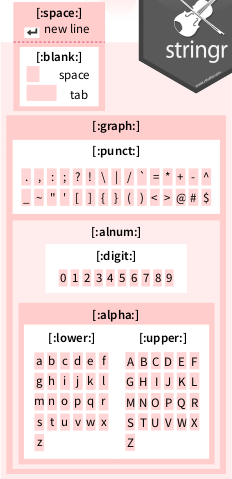

Section 6 Regular expressions and testthat
Richèl J.C. Bilderbeek
6.1 Introduction

‘Regular expressions’ from https://xkcd.com/208
6.1.1 Goal
In this chapter, you will learn:
- How to express your ideas as a regular expression
- Verify that you indeed did so
6.1.2 Why is this important?
Knowing the basics of regular expressions, prevents you having to hand-craft functions to detect patterns in any text.
Being able to verify your own assumptions allows you to speed up any development of any code. It is estimated that 50-90% of all the time, we are debugging our code. Being good at testing, is the way to become faster.
6.1.3 What are regular expressions?
A regular expression ‘is a sequence of characters that define a search pattern’. Such a pattern may be a zip code, a date, or any other text of which you can say: ‘this is not just text, it is a [something]’.
For example, take a Dutch zip code: 9747 AG. Dutch zip
code have four digits, a space and then two uppercase
alphabet characters.
A regex for this is [:digit:]{4} [:upper:]{2}.
6.1.4 Applications
DNA data:
>KU215420.1|Felinecoronavirus|Feliscatus|Belgium|2013|Envelope
ATGATGTTTCCTAGGGCATTTACTATCATAGATGACCATGGTATGGTTGTTAGTGTCTTC
>KP143511.1|Felinecoronavirus|Feliscatus|UnitedKingdom|2013|Envelope
ATGATGTTTCCTAGGGCATTTACTATCATAGACGACCATGGTATGGTTGTTAGTGTCTTCProtein data:
>sp|P0DTC2|SPIKE_SARS2 Spike glycoprotein OS=Severe acute respiratory syndrome coronavirus 2 OX=2697049 GN=S PE=1 SV=1
MFVFLVLLPLVSSQCVNLTTRTQLPPAYTNSFTRGVYYPDKVFRSSVLHSTQDLFLPFFS
>sp|P0DTC5|VME1_SARS2 Membrane protein OS=Severe acute respiratory syndrome coronavirus 2 OX=2697049 PE=3 SV=1
MADSNGTITVEELKKLLEQWNLVIGFLFLTWICLLQFAYANRNRFLYIIKLIFLWLLWPVMost messy Excel sheets :-)

6.1.5 Using regexes in R

The ‘stringr’ logo. ‘stringr’ is part of the Tidyverse
Multiple R functions to work with regular expressions:
stringr::str_egrep,grepl,gsub
6.1.6 Dangers of regexes

‘Perl problems’, from https://xkcd.com/1171/
Regexes have different dialects, such as POSIX and perl. Within R, there are the base R dialect and the Tidyverse dialect.
We’ll have to test!
6.2 Testing
From George Dinwiddie’s blog, http://blog.gdinwiddie.com/2012/12/26/tdd-hat/
6.2.1 Why test?
- To be sure your code is correct
- Spend less time fixing bugs
- Unit of communication
- Clean software interface
6.2.2 Our first test
The testthat package is the Tidyverse package to write tests.
All test functions start with expect_, for example:
If a test fails:
6.3 Detect a full match
Here, we will detect simple patterns using str_which.
Tip: run ?str_which for its documentation.
From ‘Work with Strings Cheatsheet’, https://rstudio.com/resources/cheatsheets
6.3.1 str_which demo
6.3.2 Example exercise: has_a_one
Write a function called has_a_one that detects if a character
vector contains at least one one.
To be precise: ‘a one’ is a string that starts with a 1, then ends directly.
These tests must pass:
expect_true(has_a_one("1"))
expect_true(has_a_one(c("X", "1")))
expect_true(has_a_one(c("1", "1")))
expect_false(has_a_one("X"))
expect_false(has_a_one("11"))
expect_false(has_a_one("1 1"))
expect_false(has_a_one(integer(0)))
expect_false(has_a_one(NULL))
expect_false(has_a_one(NA))Use the anchors as shown on the cheatsheet to specify that the complete string, from begin to the end, must consist out of characters

From ‘Work with Strings Cheatsheet’, https://rstudio.com/resources/cheatsheets
Here is a stub of the function, but feel free to use your own function body:
6.3.2.1 Answer has_a_one
Note that you may have had a different regex. No worries: if all tests pass, you did a great job!
expect_true(has_a_one("1"))
expect_true(has_a_one(c("X", "1")))
expect_true(has_a_one(c("1", "1")))
expect_false(has_a_one("X"))
expect_false(has_a_one("11"))
expect_false(has_a_one("1 1"))
expect_false(has_a_one(integer(0)))
expect_false(has_a_one(NULL))
expect_false(has_a_one(NA))Also, using another stringr function, such as str_count, str_subset
or str_match are all valid as well. It just made the code longer.
Also here: if all tests pass, you did a great job!
6.3.3 Exercise: has_a_digit
Write a function called has_a_digit that detects if a
character vector contains at least one digit. To be precise, ‘a digit’ is a string that starts with a (decimal) digit, the ends directly.
These tests must pass:
expect_true(has_a_digit("0"))
expect_true(has_a_digit("1"))
expect_true(has_a_digit(c("1", "2")))
expect_true(has_a_digit(c("X", "1")))
expect_false(has_a_digit(""))
expect_false(has_a_digit("12"))
expect_false(has_a_digit("1 2"))
expect_false(has_a_digit("X"))
expect_false(has_a_digit(character(0)))
expect_false(has_a_digit(NULL))
expect_false(has_a_digit(NA))Use the regex pattern as shown on the cheatsheet to specify a digit:

From ‘Work with Strings Cheatsheet’, https://rstudio.com/resources/cheatsheets
Here is a stub of the function, but feel free to use your own function body:
6.3.3.1 Answer: has_a_digit
expect_true(has_a_digit("0"))
expect_true(has_a_digit("1"))
expect_true(has_a_digit(c("1", "2")))
expect_true(has_a_digit(c("X", "1")))
expect_false(has_a_digit(""))
expect_false(has_a_digit("12"))
expect_false(has_a_digit("1 2"))
expect_false(has_a_digit("X"))
expect_false(has_a_digit(character(0)))
expect_false(has_a_digit(NULL))
expect_false(has_a_digit(NA))6.3.4 Exercise: has_a_word
Write a function called has_a_word that detects if a string is a word. To be precise (and to simplify), ‘a word’ starts with one or more lowercase characters, then ends directly.
These tests must pass:
expect_true(has_a_word("a"))
expect_true(has_a_word("an"))
expect_true(has_a_word("apple"))
expect_true(has_a_word(c("an", "apple")))
expect_true(has_a_word(c("", "apple")))
expect_false(has_a_word("."))
expect_false(has_a_word("X"))
expect_false(has_a_word("hI"))
expect_false(has_a_word("an apple"))
expect_false(has_a_word(character(0)))
expect_false(has_a_word(NULL))
expect_false(has_a_word(NA))Use the quantifiers as shown on the cheatsheet to specify that one needs one or more characters:

From ‘Work with Strings Cheatsheet’, https://rstudio.com/resources/cheatsheets
Here is a stub of the function, but feel free to use your own function body:
6.3.4.1 Answer: has_a_word
expect_true(has_a_word("a"))
expect_true(has_a_word("an"))
expect_true(has_a_word("apple"))
expect_true(has_a_word(c("an", "apple")))
expect_true(has_a_word(c("", "apple")))
expect_false(has_a_word("."))
expect_false(has_a_word("X"))
expect_false(has_a_word("hI"))
expect_false(has_a_word("an apple"))
expect_false(has_a_word(character(0)))
expect_false(has_a_word(NULL))
expect_false(has_a_word(NA))6.3.5 Exercise: has_dna_seq (alternates)
Write a function called has_dna_seq that detects if a character
vector contains one or more DNA sequences.
To be precise, ‘a DNA sequence’ starts with one or more
nucleotides (an ‘A’, ‘C’, ‘G’ or ‘T’), then ends directly.
These tests must pass:
expect_true(has_dna_seq("A"))
expect_true(has_dna_seq(c("A", "CGT")))
expect_true(has_dna_seq(c("", "CGT")))
expect_false(has_dna_seq("Ax"))
expect_false(has_dna_seq("A C"))
expect_false(has_dna_seq(character(0)))
expect_false(has_dna_seq(NULL))
expect_false(has_dna_seq(NA))Use the alternates as shown on the cheatsheet to specify that each character must be one of the four nucleotides:

From ‘Work with Strings Cheatsheet’, https://rstudio.com/resources/cheatsheets
Here is a stub of the function, but feel free to use your own function body:
6.3.5.1 Answer: has_dna_seq
6.4 Extract a pattern for one submatch
Here, we will extract a pattern using str_match.
Tip: run ?str_match for its documentation.

From ‘Work with Strings Cheatsheet’, https://rstudio.com/resources/cheatsheets
6.4.1 str_match
str_match allows to extract multiple matches at once:
6.4.2 Context
Here we will work on a DNA sequence:
library(readr)
text <- read_lines("data/virus.fas")
head(text, n = 10)
#> [1] ">KX722530.1|Felinecoronavirus|Feliscatus|Denmark|2015|Envelope"
#> [2] "ATGATGTTTCCTAGGGCTTTTACTATCATAGATGACCATGGTATGGTTGTAAGCGTCTTC"
#> [3] "TTCTGGCTCCTGTTGATAATTATATTGATATTGTTTTCAATAGCATTGCTAAATGTTATT"
#> [4] "AAGTTATGCATGGTTTGTTGCAATCTGGGTAAGACTATTATAGTACTACCTGCACGCCAT"
#> [5] "GCATATGATGCCTACAAGACTTTTATGCAAATTAAGGCATATAATCCCGACGAAGCACTT"
#> [6] "TTGGTTTGA"
#> [7] ">FJ938053.1|Felinecoronavirus|cat|NetherlandsUtrecht|2007|Envelope"
#> [8] "ATGATGTTTCCTAGGGCATTTACTATCATAGATGACCATGGTATGGTTGTCAGCGTCTTC"
#> [9] "TTTTGGCTCCTGTTGATAATTATATTGATATTGTTTTCAATAGCATTGCTAAATGTTATT"
#> [10] "AAGTTATGCATGGTATGTTGCAATTTGGGTAAGACTATTATAGTATTACCTGCACGCCAT"The data encoded in this text:
>[DNA sequence number]|[virus name]|[host species name]|[country of host]|[year]|[protein name]"
[DNA sequence]We know that there are 30 sequences and 180 lines in that file:
6.4.3 Extract a character vector from a submatch
Using a pattern that is specific for the DNA sequence descriptors, we get matched strings and NAs:
matches <- str_match(text, ">.*")
expect_is(matches, "matrix")
expect_equal(nrow(matches), n_lines)
expect_equal(ncol(matches), 1)
head(matches, n = 8)
#> [,1]
#> [1,] ">KX722530.1|Felinecoronavirus|Feliscatus|Denmark|2015|Envelope"
#> [2,] NA
#> [3,] NA
#> [4,] NA
#> [5,] NA
#> [6,] NA
#> [7,] ">FJ938053.1|Felinecoronavirus|cat|NetherlandsUtrecht|2007|Envelope"
#> [8,] NAUsing round brackets, the matrix gives one extra column per sub-match.
Here, we select for all info after the >:
matches <- str_match(text, ">(.*)")
expect_is(matches, "matrix")
expect_equal(nrow(matches), n_lines)
expect_equal(ncol(matches), 2)
head(matches, n = 8)
#> [,1]
#> [1,] ">KX722530.1|Felinecoronavirus|Feliscatus|Denmark|2015|Envelope"
#> [2,] NA
#> [3,] NA
#> [4,] NA
#> [5,] NA
#> [6,] NA
#> [7,] ">FJ938053.1|Felinecoronavirus|cat|NetherlandsUtrecht|2007|Envelope"
#> [8,] NA
#> [,2]
#> [1,] "KX722530.1|Felinecoronavirus|Feliscatus|Denmark|2015|Envelope"
#> [2,] NA
#> [3,] NA
#> [4,] NA
#> [5,] NA
#> [6,] NA
#> [7,] "FJ938053.1|Felinecoronavirus|cat|NetherlandsUtrecht|2007|Envelope"
#> [8,] NAAfter select the second column, we get rid of the NAs using na.omit
and converting to a character vector:
matches <- as.character(na.omit(matches[, 2]))
expect_is(matches, "character")
expect_equal(length(matches), n_sequences)
head(matches)
#> [1] "KX722530.1|Felinecoronavirus|Feliscatus|Denmark|2015|Envelope"
#> [2] "FJ938053.1|Felinecoronavirus|cat|NetherlandsUtrecht|2007|Envelope"
#> [3] "GU553362.1|Felinecoronavirus|feline|Netherlands|2007|Envelope"
#> [4] "KP143512.1|Felinecoronavirus|Feliscatus|UnitedKingdom|2013|Envelope"
#> [5] "KU215424.1|Felinecoronavirus|Feliscatus|Belgium|2013|Envelope"
#> [6] "HQ392470.1|Felinecoronavirus|feline|NetherlandsUtrecht|2007|Envelope"All of this in one go:
matches <- as.character(
na.omit(
str_match(text, ">(.*)")[, 2]
)
)
expect_equal(length(matches), n_sequences)
head(matches)
#> [1] "KX722530.1|Felinecoronavirus|Feliscatus|Denmark|2015|Envelope"
#> [2] "FJ938053.1|Felinecoronavirus|cat|NetherlandsUtrecht|2007|Envelope"
#> [3] "GU553362.1|Felinecoronavirus|feline|Netherlands|2007|Envelope"
#> [4] "KP143512.1|Felinecoronavirus|Feliscatus|UnitedKingdom|2013|Envelope"
#> [5] "KU215424.1|Felinecoronavirus|Feliscatus|Belgium|2013|Envelope"
#> [6] "HQ392470.1|Felinecoronavirus|feline|NetherlandsUtrecht|2007|Envelope"6.4.4 Example exercise: extract_dna_seq_numbers (1 submatch)
Extract the DNA sequence numbers.
These tests must pass:
dna_seq_numbers <- extract_dna_seq_numbers(text)
expect_equal(n_sequences, length(dna_seq_numbers))
expect_equal("KX722530.1", dna_seq_numbers[1])
expect_equal("KP143511.1", dna_seq_numbers[30])Here is a stub of the function, but feel free to use your own function body:
extract_dna_seq_numbers <- function(text) {
as.character(
na.omit(
str_match(text, "your regex here")[, 2]
)
)
}Note that the [, 2] denotes the second column. It can be another column as well
Hint:
- it is the text between
>and|Felinecoronavirus. - Use
\\|in your regex to indicate you want the pipe character ( asa|bis the regex for ‘a or b’)
6.4.5 Answer: extract_dna_seq_numbers
extract_dna_seq_numbers <- function(text) {
as.character(
na.omit(
str_match(text, ">(.*)\\|Felinecoronavirus.*")[, 2]
)
)
}dna_seq_numbers <- extract_dna_seq_numbers(text)
expect_equal(n_sequences, length(dna_seq_numbers))
expect_equal("KX722530.1", dna_seq_numbers[1])
expect_equal("KP143511.1", dna_seq_numbers[30])The regex ">(.*)\\|.*" would not work, because the asterisk is greedy.
6.5 Extract a pattern for multiple submatches
6.5.1 Context
Here we will work on a proteome:
text <- read_lines("data/UP000464024.fasta")
head(text, n = 7)
#> [1] ">sp|P0DTC7|NS7A_SARS2 Protein 7a OS=Severe acute respiratory syndrome coronavirus 2 OX=2697049 GN=7a PE=3 SV=1"
#> [2] "MKIILFLALITLATCELYHYQECVRGTTVLLKEPCSSGTYEGNSPFHPLADNKFALTCFS"
#> [3] "TQFAFACPDGVKHVYQLRARSVSPKLFIRQEEVQELYSPIFLIVAAIVFITLCFTLKRKT"
#> [4] "E"
#> [5] ">sp|P0DTD1|R1AB_SARS2 Replicase polyprotein 1ab OS=Severe acute respiratory syndrome coronavirus 2 OX=2697049 GN=rep PE=1 SV=1"
#> [6] "MESLVPGFNEKTHVQLSLPVLQVRDVLVRGFGDSVEEVLSEARQHLKDGTCGLVEVEKGV"
#> [7] "LPQLEQPYVFIKRSDARTAPHGHVMVELVAELEGIQYGRSGETLGVLVPHVGEIPVAYRK"The data encoded in this text:
>sp|[Sequence ID]|[Protein ID] [Protein description] OS=[Virus name] OX=[OX] GN=[GN] PE=[PE] SV=[SV]
[Peptide sequence]We will only look at [Sequence ID] and [Protein ID].
We know that:
6.5.2 Exercise: extract_prot_and_seq_ids
Extract all proteins’ ID and sequence ID, in a tibble.
These tests must pass:
t <- extract_prot_and_seq_ids(text)
expect_true(is_tibble(t))
expect_equal(n_proteins, nrow(t))
expect_equal(2, ncol(t))
expect_equal(colnames(t), c("seq_id", "prot_id"))
expect_equal(t$seq_id[1], "P0DTC7")
expect_equal(t$prot_id[1], "NS7A_SARS2")
expect_equal(t$seq_id[13], "P0DTC5")
expect_equal(t$prot_id[13], "VME1_SARS2")Here is a stub of the function, but feel free to use your own function body:
6.5.3 Answer: extract_prot_and_seq_ids
extract_prot_and_seq_ids <- function(text) {
matrix <- na.omit(
str_match(text,
">sp\\|([:graph:]+)\\|([:graph:]+) ")[, c(2, 3)]
)
colnames(matrix) <- c("seq_id", "prot_id")
tibble::as_tibble(matrix)
}t <- extract_prot_and_seq_ids(text)
expect_true(is_tibble(t))
expect_equal(n_proteins, nrow(t))
expect_equal(2, ncol(t))
expect_equal(colnames(t), c("seq_id", "prot_id"))
expect_equal(t$seq_id[1], "P0DTC7")
expect_equal(t$prot_id[1], "NS7A_SARS2")
expect_equal(t$seq_id[13], "P0DTC5")
expect_equal(t$prot_id[13], "VME1_SARS2")
6.7 Test for match
You may want to test if a function’s output matches a pattern:
#' Get the version, for example '1.0'
get_version <- function() {
sample(c("1.0", "1.1"), size = 1)
}Using testthat::expect_match gives an unexpected result:
expect_match(get_version(), "1\\.[:digit:]")
#> Error: get_version\(\) does not match "1\\.[:digit:]".
#> Actual value: "1\.0"Take a look at ?testthat::expect_match:
Details
expect_match() is a wrapper around grepl(). See its documentation for more detail about the individual arguments.
Use the base R regex dialect:
6.8 Bigger picture
6.8.1 Develop in packages
- Also when ‘just’ doing data analysis
- Cleanly read files
- Test you regexes
6.8.2 Regex usage outside R
There are plenty of tools that allow to use regular expressions:
grep,egrepseddir/ls
6.8.3 Warning

‘Regex Golf’, from https://xkcd.com/1313/
Don’t overthink your regexes! If all tests pass, you did a good job
6.9 Resources
- RStudio cheatsheets, including the ‘Work with Strings Cheatsheet’